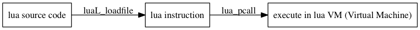
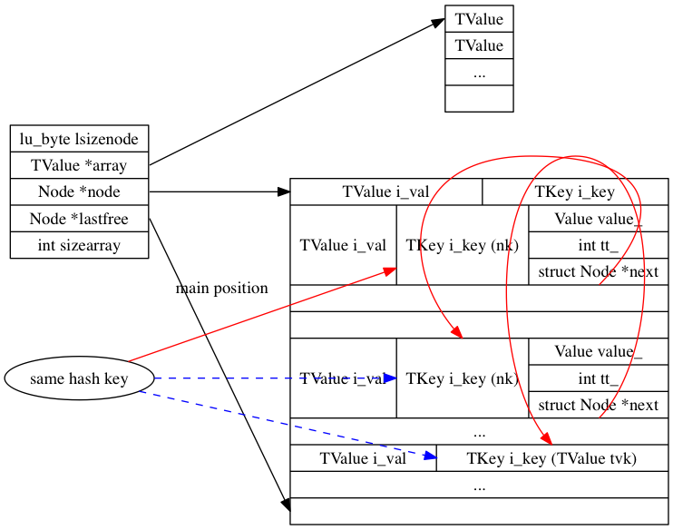

nil (like "None" in Python, including undefined variables)true, false
-- This is a comment.
-- Empty table
local t1 = {}
-- Table as an array
local t2 = { 1, 2, "str", t1 }
-- Table as a hashtable
local t3 = {
["k1"] = "v1",
k2 = "v2",
}
-- Table as mixed data structure of array and hashtable
local t4 = {
"e1", -- stored in the array part
["k1"] = "v1", -- stored in the hash part
k2 = "v2", -- stored in the hash part
}
Array Operations:
Set the element of position "n"
NOTE: index in Lua starts from 1
-- Way #1: specify the index
local t = {}
t[1] = "e1"
t[2] = "e2"
t[3] = "e3"
t[4] = "e4"
-- Way #2: use table.insert (list, [pos,] value)
local t = {}
table.insert(t, 1, "e1")
table.insert(t, 2, "e2")
-- table.insert(t, x) inserts x at the end of list t
table.insert(t, "e3")
table.insert(t, "e4")
See the manual of table.insert
Get the element of position "n"
local t = {"e1", "e2", "e3", "e4"}
-- Get the fourth element
print(t[4])
--[[
This is a multi-line comment.
Output:
e4
]]
Get the number of elements
local t = {"e1", "e2", "e3", "e4"}
-- Way #1: the length operator "#"
print(#t)
--[[
Output:
4
]]
-- Way #2
--[[
table.unpack(t) returns "e1", "e2", "e3", "e4"
so it becomes:
print(select('#', "e1", "e2", "e3", "e4"))
]]
print(select('#', table.unpack(t)))
Refer to:
Iterate over all elements
local t = {"e1", "e2", "e3", "e4"}
-- Forward iteration
for i = 1, 4 do
print(t[i])
end
--[[
Output:
e1
e2
e3
e4
]]
-- More general way:
for i = 1, #t do
print(t[i])
end
--[[
Output:
e1
e2
e3
e4
]]
-- Backward iteration:
-- for i = start, end, step do
-- end
for i = #t, 1, -1 do
print(t[i])
end
--[[
Output:
e4
e3
e2
e1
]]
There's another way of using an iterator. We will talk about that later.
Delete the element of position "n"
-- Way #1: set the specified element as nil
local t = {"e1", "e2", "e3", "e4"}
-- Delete the third element
t[3] = nil
--[[
NOTE:
1. Lua table will not pack the elements backward to fill the empty slot
2. the number of elements will not change
]]
print("The number of elements:", #t)
for i = 1, #t do
print(t[i])
end
--[[
Output:
The number of elements: 4
e1
e2
nil
e4
]]
Delete the element of position "n"
-- Way #2: use table.remove (list [, pos])
local t = {"e1", "e2", "e3", "e4"}
table.remove(t, 3)
print("The number of elements:", #t)
for i = 1, #t do
print(t[i])
end
--[[
Output:
The number of elements: 3
e1
e2
e4
]]
-- table.remove(t) removes the last element of list t.
table.remove(t)
print("The number of elements:", #t)
for i = 1, #t do
print(t[i])
end
--[[
Output:
The number of elements: 2
e1
e2
]]
See the manual of table.remove
Common misuse of table.remove in a loop
local t = {1, 2, 3, 4}
for i = 1, #t do
if t[i] < 4 then
table.remove(t, i)
end
end
--[[
Opps...
lua: xxx.lua:4: attempt to compare nil with number
stack traceback:
xxx.lua:4: in main chunk
[C]: in ?
]]
Why?
Trace the source code using print
local t = {1, 2, 3, 4}
for i = 1, #t do
print(i, t[i])
if t[i] < 4 then
table.remove(t, i)
end
end
--[[
1 1
2 3
3 nil
lua: xxx.lua:5: attempt to compare nil with number
stack traceback:
xxx.lua:5: in main chunk
[C]: in ?
]]
Straightforward solution: use backward iteration.
local t = {1, 2, 3, 4}
for i = #t, 1, -1 do
if t[i] < 4 then
table.remove(t, i)
end
end
for i = 1, #t do
print(t[i])
end
--[[
Output:
4
]]
We will see another misuse case of table.remove when we discuss iterator ;)
Hashtable Operations:
local t = {}
-- Way #1
t["key"] = "value"
-- Way #2: syntactic sugar
t.key = "value"
-- Compare with the following code:
local key = "key"
t[key] = "value"
local t = {
"key" = "value",
}
print("t[\"key\"] = ", t["key"])
print("t.key = ", t.key)
local k = "key"
print("t[k] = ", t[k])
-- t.k is equivalent to t["k"]
print("t.k = ", t.k)
--[[
Output:
t["key"] = value
t.key = value
t[k] = value
t.k = nil
]]
local t = {
"key" = "value",
}
t.key = nil
?
Meet `next (table [, index])`
Allows a program to traverse all fields of a table. Its first argument is a table and its second argument is an index in this table. next returns the next index of the table and its associated value. When called with nil as its second argument, next returns an initial index and its associated value. When called with the last index, or with nil in an empty table, next returns nil. If the second argument is absent, then it is interpreted as nil. In particular, you can use next(t) to check whether a table is empty.
local t = {
k1 = "v1",
k2 = "v2",
k3 = "v3",
}
local k, v
-- Note: equivalent to:
-- local k = nil
-- local v = nil
for i = 1, 3 do
k, v = next(t, k)
print(k, v)
end
-- NOTE: The order in which the indices are enumerated is not specified, even for numeric indices.
--[[
Output:
k1 v1
k3 v3
k2 v2
]]
See the manual of next
What if we don't know there's three key-value pairs in the table `t`?
local t = {
k1 = "v1",
k2 = "v2",
k3 = "v3",
}
local k, v = next(t, k)
while k do
-- Note: equivalent to:
-- while k ~= nil do
print(k, v)
k, v = next(t, k)
end
--[[
Output:
k2 v2
k1 v1
k3 v3
]]
Advanced skill: meet the "generic for" in Lua.
for {var-list} in {exp-list} do
{body}
end
Now we can write an iterator and use it in the generic for loop!
Hand-written iterator (V1):
local t = {
k1 = "v1",
k2 = "v2",
k3 = "v3",
}
local function iter(t)
local last_k
return function()
local v
last_k, v = next(t, last_k)
return last_k, v
end
end
-- Use the iterator in the generic for loop
for k, v in iter(t) do
print(k, v)
end
--[[
Output:
k3 v3
k2 v2
k1 v1
]]
-- Use the iterator to rewrite the previous while loop
local producer = iter(t)
local k, v = producer()
while k do
print(k, v)
k, v = producer()
end
--[[
Output:
k3 v3
k2 v2
k1 v1
]]
It would be difficult to understand if you don't know anything about closure or lambda! :(
Hand-written iterator (V2):
we can pass a function and its parameters in {exp-list} of "generic for".
local t = {
k1 = "v1",
k2 = "v2",
k3 = "v3",
}
for k, v in next, t do
print(k, v)
end
--[[
Output:
k3 v3
k2 v2
k1 v1
]]
There's a built-in iterator: `pairs`! XD
local t = {
k1 = "v1",
k2 = "v2",
k3 = "v3",
}
for k, v in pairs(t) do
print(k, v)
end
--[[
Output:
k3 v3
k1 v1
k2 v2
]]
See the manual of pairs
There's another built-in iterator for array: `ipairs`! XD
local t = {"e1", "e2", "e3", "e4"}
-- Only forward iteration
for i, v in ipairs(t) do
print(i, v)
end
--[[
Output:
1 e1
2 e2
3 e3
4 e4
]]
See the manual of ipairs
Now we can talk about another common misuse of table.remove in loop.
local t = {1, 2, 3, 4}
for i, v in ipairs(t) do
print("Access the element: ", v)
if v < 4 then
table.remove(t, i)
end
end
print("Result:")
for i, v in ipairs(t) do
print(i, v)
end
--[[
Output:
Access the element: 1
Access the element: 3
Result:
1 2
2 4
]]
local t = {
k1 = "v1",
k2 = "v2",
k3 = "v3",
}
-- Try the length operator "#":
print(#t)
--[[
Output:
0
]]
Opps...The length operator "#" only deals with the array part of table. :(
Since we know how to iterator over the table, we know how to count all the key-value pairs. :)
local t = {
k1 = "v1",
k2 = "v2",
k3 = "v3",
}
local cnt = 0
for i, v in pairs(t) do
cnt = cnt + 1
end
print(cnt)
--[[
Output:
3
]]
Complexity: O(N)
Like C array:
-- Create a matrix of zeros with dimensions N by M
-- Way #1
mt = {} -- create the matrix
for i = 1, N do
mt[i] = {} -- create a new row
for j = 1, M do
mt[i][j] = 0
end
end
-- Way #2
mt = {} -- create the matrix
for i = 1, N do
for j = 1, M do
mt[i*M + j] = 0
end
end
-- local node = {next = node, value = v}
-- local list = first_node
function traverse(list)
local node = list
while node do
print(node.value)
node = node.next
end
end
-- We counting the nodes from 1
function insert_kth_node(list, k, node)
assert(k > 0, "invalid k")
-- Insert from front
if k == 1 then
node.next = list
return
end
local previous_node = list
for i = 1, k-1 do
assert(previous_node.next, "invalid k")
previous_node = previous_node.next
end
node.next = previous_node.next
previous_node.next = node
end
function delete_kth_node(list, k)
assert(k > 0, "invalid k")
local previous_node = list
for i = 1, k-1 do
assert(previous_node.next, "invalid k")
previous_node = previous_node.next
end
local node = previous_node.next
if node then
previous_node.next = node.next
node = nil -- to allow garbage collection
end
end
-- Use Stack as a namespace
local Stack = {}
function Stack.push(stack, element)
table.insert(stack, element)
end
function Stack.pop(stack)
table.remove(stack)
end
function Stack.top(stack)
return stack[#stack]
end
local Queue = {}
function Queue.new()
return {first = 0, last = -1}
end
function Queue.pushleft(queue, value)
local first = queue.first - 1
queue.first = first
queue[first] = value
end
function Queue.pushright(queue, value)
local last = queue.last + 1
queue.last = last
queue[last] = value
end
function Queue.popleft(queue)
local first = queue.first
assert(first <= queue.last, "queue is empty")
local value = queue[first]
queue[first] = nil -- to allow garbage collection
queue.first = first + 1
return value
end
function Queue.popright(list)
local last = queue.last
assert(queue.first <= last, "queue is empty")
local value = queue[last]
queue[last] = nil -- to allow garbage collection
queue.last = last - 1
return value
end
local Set = {}
function Set.new()
return {}
end
function Set.add(set, element)
set[element] = true
end
function Set.has(set, element)
return set[element]
end
-- Union of two sets
function Set.union(set1, set2)
local union = {}
for _, set in ipairs({set1, set2}) do
for k, _ in pairs(set) do
union[k] = true
end
end
return union
end
--[[
For advanced Lua user, you can write a more general function for set union.
e.g.
function Set.union(...)
local union = {}
for _, set in ipairs({...}) do
for k, _ in pairs(set) do
union[k] = true
end
end
return union
end
]]
-- Intersection of two sets
function Set.intersect(set1, set2)
local intersect = {}
for k, _ in pairs(set1) do
intersect[k] = set2[k]
end
return intersect
end
--[[
For advanced Lua user, you can write a more general function for set intersection.
e.g.
-- This is a naive version of counting elements:
function Set.intersect(...)
local intersect = {}
local set_list = {...}
for _, set in ipairs(set_list) do
for k, _ in pairs() do
if intersect[k] then
intersect[k] = intersect[k] + 1
else
intersect[k] = 1
end
end
end
local num_of_set = #set_list
for k, num in pairs(intersect) do
if num < num_of_set then
intersect[k] = nil
else
intersect[k] = true
end
end
return intersect
end
-- This is a better version:
function Set.intersect(...)
local intersect = {}
local set_list = {...}
local first_set = set_list[1]
local num_of_set = #set_list
for k, _ in pairs(first_set) do
intersect[k] = true
for i = 2, num_of_set do
local set = set_list[i]
-- equivalent to:
-- set[k] == nil or set[k] == false
if not set[k] then
intersect[k] = nil
break
end
end
end
return intersect
end
]]
The version of Lua source code is 5.2
I omit and modify some code for simplicity. XD
Definition in lobject.h:
typedef struct Table {
lu_byte lsizenode; /* log2 of size of `node' array */
TValue *array; /* array part */
Node *node;
Node *lastfree; /* any free position is before this position */
int sizearray; /* size of `array' array */
} Table;
Table` contain?Table` instance has at lease three continued areas in memory:
Table` instance itself.array`: array part of `Table`node`: hash part of `Table`Table` contain?sizearray`lsizenode`
#define twoto(x) (1<<(x))
#define sizenode(t) (twoto((t)->lsizenode))
Macros related to `Table`:
#define gnode(t,i) (&(t)->node[i])
We will meet this macro later. ;)
Node`?
typedef struct Node {
TValue i_val;
TKey i_key;
} Node;
`Node` is the structure for key-value pair
Macros related to `Node`:
#define gval(n) (&(n)->i_val)
TValue` then?
typedef struct lua_TValue TValue;
/*
** Tagged Values. This is the basic representation of values in Lua,
** an actual value plus a tag with its type.
*/
struct lua_TValue {
Value value_;
int tt_;
};
`TValue` = Tagged Value
TValue` contains the value and a type tagMacros related to `TValue`:
#define val_(o) ((o)->value_)
/* raw type tag of a TValue */
#define rttype(o) ((o)->tt_)
#define setobj(L,obj1,obj2) \
{ const TValue *io2=(obj2); TValue *io1=(obj1); \
io1->value_ = io2->value_; io1->tt_ = io2->tt_; }
We will meet these macros later. ;)
lua.h
/*
** basic types
*/
#define LUA_TNONE (-1)
#define LUA_TNIL 0
#define LUA_TBOOLEAN 1
#define LUA_TLIGHTUSERDATA 2
#define LUA_TNUMBER 3
#define LUA_TSTRING 4
#define LUA_TTABLE 5
#define LUA_TFUNCTION 6
#define LUA_TUSERDATA 7
#define LUA_TTHREAD 8
#define LUA_NUMTAGS 9
/* raw type tag of a TValue */
#define rttype(o) ((o)->tt_)
/* Macros to test type */
#define checktag(o,t) (rttype(o) == (t))
#define ttistable(o) checktag((o), LUA_TTABLE)
#define hvalue(o) check_exp(ttistable(o), &val_(o).gc->h)
Again, we will meet these macros later. ;)
Value`?
union Value {
GCObject *gc; /* collectable objects */
void *p; /* light userdata */
int b; /* booleans */
lua_CFunction f; /* light C functions */
lua_Number n; /* numbers */
};
`Value` can be:
nil`? No! Tag of `TValue` is enough.
#define settt_(o,t) ((o)->tt_=(t))
#define setnilvalue(obj) settt_(obj, LUA_TNIL)
#define ttisnil(o) checktag((o), LUA_TNIL)
Value`?
union Value {
GCObject *gc; /* collectable objects */
void *p; /* light userdata */
int b; /* booleans */
lua_CFunction f; /* light C functions */
lua_Number n; /* numbers */
};
`Value` can be:
#define val_(o) ((o)->value_)
#define num_(o) (val_(o).n)
#define nvalue(o) check_exp(ttisnumber(o), num_(o))
#define setnvalue(obj,x) \
{ TValue *io=(obj); num_(io)=(x); settt_(io, LUA_TNUMBER); }
Value`?
union Value {
GCObject *gc; /* collectable objects */
void *p; /* light userdata */
int b; /* booleans */
lua_CFunction f; /* light C functions */
lua_Number n; /* numbers */
};
`Value` can be:
#define sethvalue(L,obj,x) \
{ TValue *io=(obj); \
val_(io).gc=cast(GCObject *, (x)); settt_(io, LUA_TTABLE); }
GCObject` then?lstate.h
/*
** Union of all collectable objects
*/
typedef union GCObject GCObject;
union GCObject {
GCheader gch; /* common header */
union TString ts;
union Udata u;
union Closure cl;
struct Table h;
struct Proto p;
struct UpVal uv;
struct lua_State th; /* thread */
};
TValue`?TKey`?
typedef union TKey {
struct {
Value value_;
int tt_;
struct Node *next; /* for chaining */
} nk;
TValue tvk;
} TKey;
Macros related to `TKey`:
#define gkey(n) (&(n)->i_key.tvk)
#define gnext(n) ((n)->i_key.nk.next)
Node`?Combine `TValue` and `TKey` into `Node`.
Table`?Lua programs are not interpreted directly from the textual Lua file, but are compiled into bytecode, which is then run on the Lua virtual machine.
Here we care about the execution phrase, and we will start our analysis from function `luaV_execute`.
local t = {}
0+ params, 2 slots, 1 upvalue, 1 local, 0 constants, 0 functions
1 [1] NEWTABLE 0 0 0
2 [1] RETURN 0 1
Instructions related to table creation:
1 [1] NEWTABLE 0 0 0
NEWTABLE A B C R(A) := {} (size = B,C)
void luaV_execute (lua_State *L) {
CallInfo *ci = L->ci;
LClosure *cl;
TValue *k;
StkId base;
newframe: /* reentry point when frame changes (call/return) */
lua_assert(ci == L->ci);
cl = clLvalue(ci->func);
k = cl->p->k;
base = ci->u.l.base;
/* main loop of interpreter */
for (;;) {
Instruction i = *(ci->u.l.savedpc++);
StkId ra;
if ((L->hookmask & (LUA_MASKLINE | LUA_MASKCOUNT)) &&
(--L->hookcount == 0 || L->hookmask & LUA_MASKLINE)) {
Protect(traceexec(L));
}
/* WARNING: several calls may realloc the stack and invalidate `ra' */
ra = RA(i);
lua_assert(base == ci->u.l.base);
lua_assert(base <= L->top && L->top < L->stack + L->stacksize);
vmdispatch (GET_OPCODE(i)) {
vmcase(OP_NEWTABLE,
int b = GETARG_B(i);
int c = GETARG_C(i);
Table *t = luaH_new(L);
sethvalue(L, ra, t);
if (b != 0 || c != 0)
luaH_resize(L, t, luaO_fb2int(b), luaO_fb2int(c));
checkGC(L, ra + 1);
)
}
}
}
A bit confused?
We only need to trace the following part of code for the naive example. ;)
vmcase(OP_NEWTABLE,
// Get the operator B from the instruction
int b = GETARG_B(i);
// Get the operator C from the instruction
int c = GETARG_C(i);
Table *t = luaH_new(L);
// Remember this macro: `sethvalue` ? ;)
sethvalue(L, ra, t);
)
Now we only need to look at `luaH_new`. :)
Table *luaH_new (lua_State *L) {
Table *t = &luaC_newobj(L, LUA_TTABLE, sizeof(Table), NULL, 0)->h;
t->array = NULL;
t->sizearray = 0;
setnodevector(L, t, 0);
return t;
}
static void setnodevector (lua_State *L, Table *t, int size) {
int lsize;
if (size == 0) { /* no elements to hash part? */
t->node = cast(Node *, dummynode); /* use common `dummynode' */
lsize = 0;
}
else {
int i;
lsize = luaO_ceillog2(size);
if (lsize > MAXBITS)
luaG_runerror(L, "table overflow");
size = twoto(lsize);
t->node = luaM_newvector(L, size, Node);
for (i = 0; i < size; i++) {
Node *n = gnode(t, i);
gnext(n) = NULL;
setnilvalue(gkey(n));
setnilvalue(gval(n));
}
}
t->lsizenode = cast_byte(lsize);
t->lastfree = gnode(t, size); /* all positions are free */
}
Confused by `setnodevector`?
Table *luaH_new (lua_State *L) {
Table *t = &luaC_newobj(L, LUA_TTABLE, sizeof(Table), NULL, 0)->h;
t->array = NULL;
t->sizearray = 0;
t->node = cast(Node *, dummynode); /* use common `dummynode' */
t->lsizenode = 0;
t->lastfree = gnode(t, 0); /* all positions are free */
return t;
}
dummynode`?
/* macro defining a nil value */
#define NILCONSTANT {NULL}, LUA_TNIL
#define dummynode (&dummynode_)
#define isdummy(n) ((n) == dummynode)
static const Node dummynode_ = {
{NILCONSTANT}, /* value */
{{NILCONSTANT, NULL}} /* key */
};
All empty table in Lua points to the same memory area. CLEVER Lua!
Table`?We will come back to this topic later. ;)
Table`?
local t = {}
return t[1]
0+ params, 2 slots, 1 upvalue, 1 local, 1 constant, 0 functions
1 [1] NEWTABLE 0 0 0
2 [2] GETTABLE 1 0 -1 ; 1
3 [2] RETURN 1 2
4 [2] RETURN 0 1
Instructions related to accessing table:
2 [2] GETTABLE 1 0 -1 ; 1
GETTABLE A B C R(A) := R(B)[RK(C)]
Look at the for loop in `luaV_execute` (lvm.c):
vmcase(OP_GETTABLE,
Protect(luaV_gettable(L, RB(i), RKC(i), ra));
)
Now we need to look at `luaV_gettable`. :)
void luaV_gettable (lua_State *L, const TValue *t, TValue *key, TValue *val) {
// Remember this macro: `ttistable` ? ;)
if (ttistable(t)) { /* `t' is a table? */
// Remember this macro: `hvalue` ? ;)
Table *h = hvalue(t);
const TValue *res = luaH_get(h, key); /* do a primitive get */
// Remember this macro: `ttisnil` ? ;)
if (!ttisnil(res)) { /* result is not nil? */
// Remember this macro: `setobj` ? ;)
setobj(L, val, res);
}
}
return;
}
Now only the function `luaH_get` causes our headaches.
luaH_get`
/*
** main search function
*/
const TValue *luaH_get (Table *t, const TValue *key) {
switch (ttype(key)) {
case LUA_TSHRSTR: return luaH_getstr(t, rawtsvalue(key));
case LUA_TNIL: return luaO_nilobject;
case LUA_TNUMBER: {
int k;
lua_Number n = nvalue(key);
lua_number2int(k, n);
if (luai_numeq(cast_num(k), n)) /* index is int? */
return luaH_getint(t, k); /* use specialized version */
/* else go through */
}
default: {
Node *n = mainposition(t, key);
do { /* check whether `key' is somewhere in the chain */
if (luaV_rawequalobj(gkey(n), key))
return gval(n); /* that's it */
else n = gnext(n);
} while (n);
return luaO_nilobject;
}
}
}
const TValue *luaH_get (Table *t, const TValue *key) {
int k;
// Remember this macro: `nvalue` ? ;)
lua_Number n = nvalue(key);
lua_number2int(k, n);
if (luai_numeq(cast_num(k), n)) /* index is int? */
return luaH_getint(t, k); /* use specialized version */
}
What's the so-called specialized function `luaH_getint`?
luaH_get`
/*
** search function for integers
*/
const TValue *luaH_getint (Table *t, int key) {
/* (1 <= key && key <= t->sizearray) */
if (cast(unsigned int, key-1) < cast(unsigned int, t->sizearray))
return &t->array[key-1];
else {
lua_Number nk = cast_num(key);
Node *n = hashnum(t, nk);
do { /* check whether `key' is somewhere in the chain */
if (ttisnumber(gkey(n)) && luai_numeq(nvalue(gkey(n)), nk))
return gval(n); /* that's it */
else n = gnext(n);
} while (n);
return luaO_nilobject;
}
}
do { /* check whether `key' is somewhere in the chain */
if (ttisnumber(gkey(n)) && luai_numeq(nvalue(gkey(n)), nk))
return gval(n); /* that's it */
else n = gnext(n);
} while (n);
return luaO_nilobject;
luaH_get`Lua table uses open addressing to resolve hash collision:
luaH_get`luaH_get` is similar to `luaH_getint`. XDTable` element?
local t = {}
t[1] = 3
0+ params, 2 slots, 1 upvalue, 1 local, 2 constants, 0 functions
1 [1] NEWTABLE 0 0 0
2 [2] SETTABLE 0 -1 -2 ; 1 3
3 [2] RETURN 0 1
Instructions related to accessing table:
2 [2] SETTABLE 0 -1 -2 ; 1 3
SETTABLE A B C R(A)[RK(B)] := RK(C)
Look at the for loop in `luaV_execute` (lvm.c):
vmcase(OP_SETTABLE,
Protect(luaV_settable(L, ra, RKB(i), RKC(i)));
)
It looks like the case of `GETTABLE`. XD
Now look at function `luaV_settable`:
void luaV_settable (lua_State *L, const TValue *t, TValue *key, TValue *val) {
if (ttistable(t)) { /* `t' is a table? */
Table *h = hvalue(t);
// Remember `luaH_get`?
TValue *oldval = cast(TValue *, luaH_get(h, key));
/* is there a previous entry in the table? */
if (!ttisnil(oldval) ||
/* no previous entry; must create one. (The next test is
* always true; we only need the assignment.) */
(oldval = luaH_newkey(L, h, key), 1)) {
/* (now) there is an entry with given key */
setobj(L, oldval, val); /* assign new value to that entry */
}
}
return;
}
C trick of comma operator: (a, b, c) is a sequence of expressions, separated by commas, which evaluates to the last expression c.
luaV_settable do?nil: create a new key by `luaH_newkey` and write the corresponding value.luaH_newkey do?
/*
** inserts a new key into a hash table; first, check whether key's main
** position is free. If not, check whether colliding node is in its main
** position or not: if it is not, move colliding node to an empty place and
** put new key in its main position; otherwise (colliding node is in its main
** position), new key goes to an empty position.
*/
TValue *luaH_newkey (lua_State *L, Table *t, const TValue *key) {
Node *mp;
if (ttisnil(key)) luaG_runerror(L, "table index is nil");
else if (ttisnumber(key) && luai_numisnan(L, nvalue(key)))
luaG_runerror(L, "table index is NaN");
mp = mainposition(t, key);
if (!ttisnil(gval(mp)) || isdummy(mp)) { /* main position is taken? */
Node *othern;
Node *n = getfreepos(t); /* get a free place */
if (n == NULL) { /* cannot find a free place? */
rehash(L, t, key); /* grow table */
/* whatever called 'newkey' take care of TM cache and GC barrier */
return luaH_set(L, t, key); /* insert key into grown table */
}
lua_assert(!isdummy(n));
othern = mainposition(t, gkey(mp));
if (othern != mp) { /* is colliding node out of its main position? */
/* yes; move colliding node into free position */
while (gnext(othern) != mp) othern = gnext(othern); /* find previous */
gnext(othern) = n; /* redo the chain with `n' in place of `mp' */
*n = *mp; /* copy colliding node into free pos. (mp->next also goes) */
gnext(mp) = NULL; /* now `mp' is free */
setnilvalue(gval(mp));
}
else { /* colliding node is in its own main position */
/* new node will go into free position */
gnext(n) = gnext(mp); /* chain new position */
gnext(mp) = n;
mp = n;
}
}
setobj(L, gkey(mp), key);
return gval(mp);
}
Don't be scared, we will take it apart. ;D
There's free space. The main position has not been occupied. XD
TValue *luaH_newkey (lua_State *L, Table *t, const TValue *key) {
Node *mp;
mp = mainposition(t, key);
setobj(L, gkey(mp), key);
return gval(mp);
}
There's free space. The main position has been occupied, and that bad guy is occupying its main position. :|
TValue *luaH_newkey (lua_State *L, Table *t, const TValue *key) {
Node *mp;
mp = mainposition(t, key);
if (!ttisnil(gval(mp)) || isdummy(mp)) { /* main position is taken? */
Node *othern;
Node *n = getfreepos(t); /* get a free place */
lua_assert(!isdummy(n));
/* colliding node is in its own main position */
/* new node will go into free position */
gnext(n) = gnext(mp); /* chain new position */
gnext(mp) = n;
mp = n;
}
setobj(L, gkey(mp), key);
return gval(mp);
}
There's free space. The main position has been occupied, and that bad guy is not occupying its main position. :(
TValue *luaH_newkey (lua_State *L, Table *t, const TValue *key) {
Node *mp;
mp = mainposition(t, key);
if (!ttisnil(gval(mp)) || isdummy(mp)) { /* main position is taken? */
Node *othern;
Node *n = getfreepos(t); /* get a free place */
lua_assert(!isdummy(n));
othern = mainposition(t, gkey(mp));
if (othern != mp) { /* is colliding node out of its main position? */
/* yes; move colliding node into free position */
while (gnext(othern) != mp) othern = gnext(othern); /* find previous */
gnext(othern) = n; /* redo the chain with `n' in place of `mp' */
*n = *mp; /* copy colliding node into free pos. (mp->next also goes) */
gnext(mp) = NULL; /* now `mp' is free */
setnilvalue(gval(mp));
}
}
setobj(L, gkey(mp), key);
return gval(mp);
}
There's no free space. :(
It will cause rehashing.
lsizenode` field of `Table`?)I will not show the source code of rehashing in order not to scare you. XD
What's the difference between the following code snippets?
local t = {"e1", "e2", "e3", "e4", "e5"}
local t = {}
t[1] = "e1"
t[2] = "e2"
t[3] = "e3"
t[4] = "e4"
t[5] = "e5"
Zero rehash, resize the array part once at table creation. :)
local t = {"e1", "e2", "e3", "e4", "e5"}
Rehash four times at SETTABLE. :(
local t = {}
t[1] = "e1" -- rehash
t[2] = "e2" -- rehash
t[3] = "e3" -- rehash
t[4] = "e4"
t[5] = "e5" -- rehash
The rehashing overhead can be much higher if there's lots of small table in your Lua program.
Prefer this way to avoid initial rehashings of table.
local t = {"e1", "e2", "e3", "e4", "e5"}
{}` (we have meet it), `_ENV`, `_G`, etc.